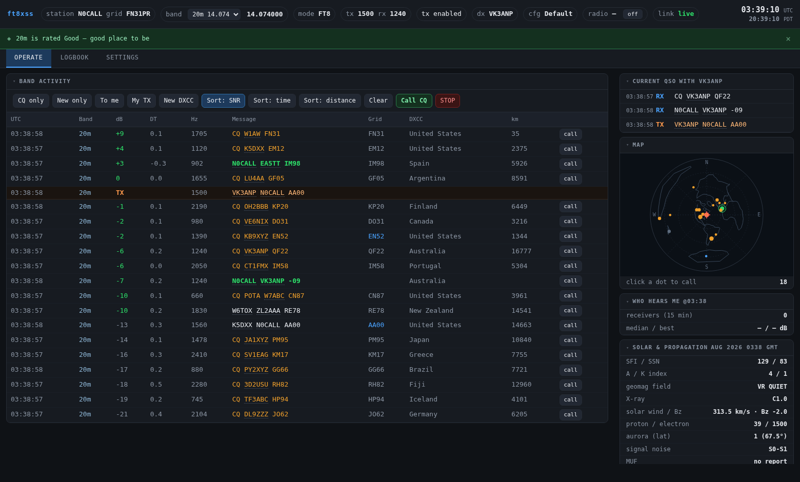
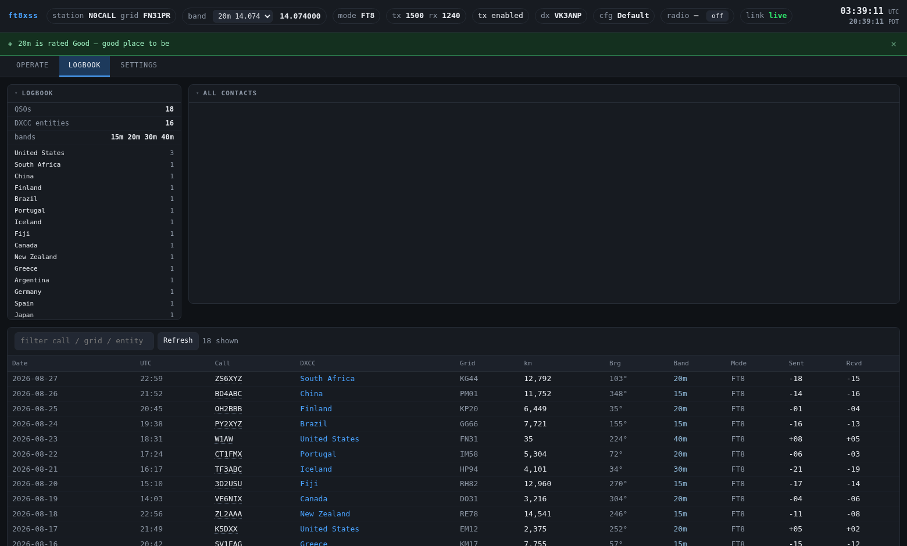
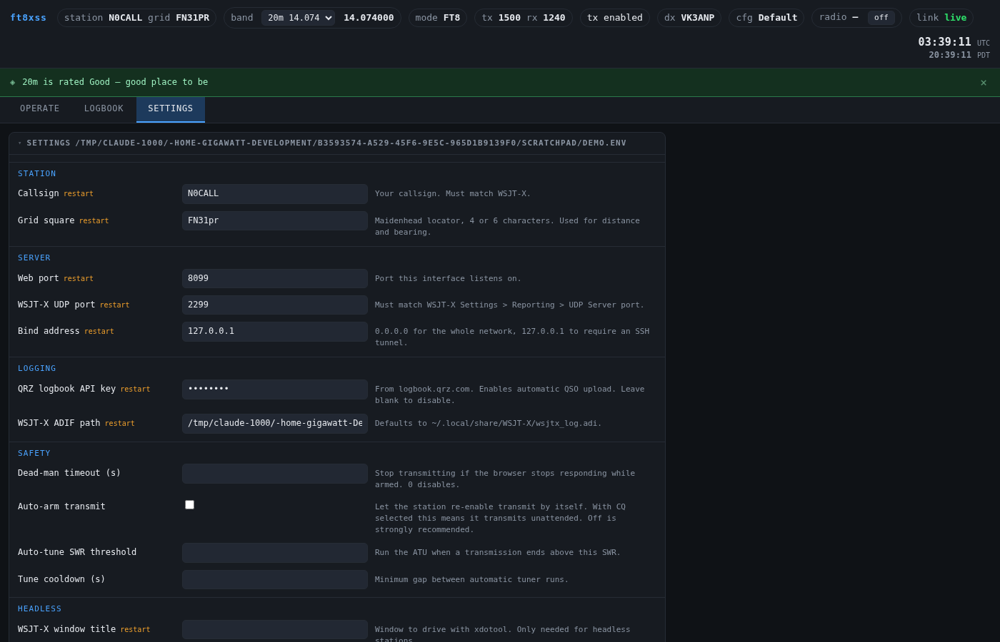

Live decodes, click-to-call, automatic logging and rig telemetry — from a phone, tablet or laptop anywhere on your network. Without replacing your modem.

The operate view. Screenshots use synthetic data.
ft8xss is a web front end for WSJT-X. It reads the decodes WSJT-X already broadcasts, shows them somewhere useful, and lets you work stations without sitting at the radio.
It does not replace your modem.
Other web FT8 projects implement their own DSP in the browser or embed WSJT-X's decoder binaries. ft8xss drives an unmodified WSJT-X over its standard UDP protocol. You install it beside the WSJT-X you already run and trust — no forked decoder, no replacement DSP, and it keeps working when WSJT-X updates.
Keep using the WSJT-X window as you always have. ft8xss adds a dashboard you can open beside it, or on your phone from the sofa.
WSJT-X on a Pi or server with the radio attached, and you operate entirely from a browser. No VNC.
Every decode with SNR, distance, bearing, DXCC entity and band. Filter by CQ, new callsign, new DXCC, or messages addressed to you. Sort by signal, time or distance.
Call any decode, or call CQ, from the browser. Sends the same Reply packet WSJT-X uses when you double-click a line.
The exchange as a conversation rather than scattered rows — and a warning when the other station keeps repeating a reply, which means they are not hearing you.
QSOs log automatically and upload to your QRZ logbook, with a per-contact status badge so you can see exactly which one failed.
Entities resolved from callsign prefixes and checked against your real QRZ logbook, so “new one” means new to you.
Live power, ALC, SWR and S-meter through hamlib, including peak readings captured during each transmission.
On a band change: run the ATU if SWR is high, then find the drive level that gives full power with clean ALC — measured, not guessed.
Solar indices, HF band ratings day and night, VHF and E-skip status, and a recommendation for the best band right now.
Live PSK Reporter reception reports. Stop guessing whether you are getting out — the answer is on the screen.
Centred on your QTH, so distance from centre is true distance and angle is true bearing. Where a dot sits is where the antenna points.
Full history with entity summary, sortable columns, filters, and a map that follows the filter.
One click produces a redacted report — versions, device detection, live state, errors and logs — to attach to an issue. API keys never appear.
Every contact, plotted by true bearing and distance from your station.

This software keys your transmitter. You are the control operator. The design assumes that and behaves accordingly.
Python 3.10+, aiohttp, and a working WSJT-X. hamlib
(rigctld) is optional but unlocks rig telemetry, band changes and
the tuner.
git clone https://github.com/detournemint/ft8xss cd ft8xss pip install -e . # tell it who you are cp ft8xss.example.env ~/.config/ft8xss.env $EDITOR ~/.config/ft8xss.env # callsign, grid, QRZ key python3 -m ft8xss.server # then open http://localhost:8073
In WSJT-X: Settings → Reporting → UDP Server 127.0.0.1,
port 2237, and tick Accept UDP requests so
click-to-call works.
Start ft8xss before WSJT-X.
WSJT-X binds the UDP port itself if nothing else has it, and ft8xss will then see no decodes at all. This is the single most common setup mistake.
Everything else is configurable from the Settings tab in the browser.

Decodes, click-to-call, logging, DXCC and the map are rig-agnostic — they ride on WSJT-X's UDP protocol. The rig-specific extras (meters, tuner, power, band changes) go through hamlib, so support varies by backend.
Running it on something else? Please tell us.
Open an issue with the diagnostics bundle from the Radio panel — it captures your hamlib version, detected model and which meters responded, with API keys redacted. Two minutes of your time saves the next person an evening. Report your radio →
Built on other people's work:
Ideas borrowed, with thanks:
Neither project shares code with this one — the debt is conceptual. ft8xss is not affiliated with or endorsed by the WSJT-X authors.